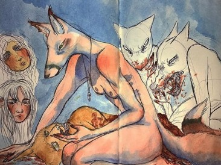
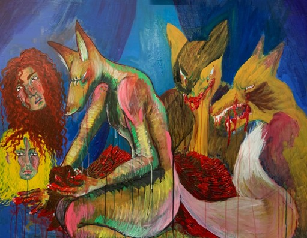
Title, Material: lady Vulpus, gouache and acrylic on canvas Size: 50 x 100 cm
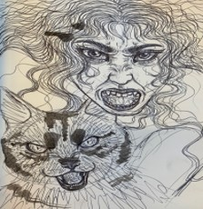
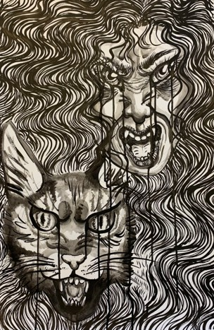
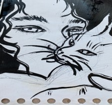
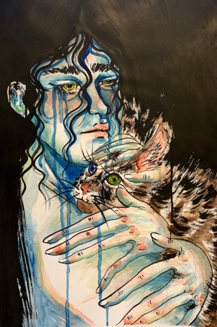
Title, Material: Grief and Anger, Japanese Ink and Watercolor on paper Size: 42 x 59,4 cm
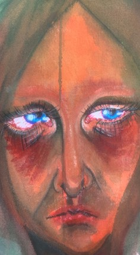
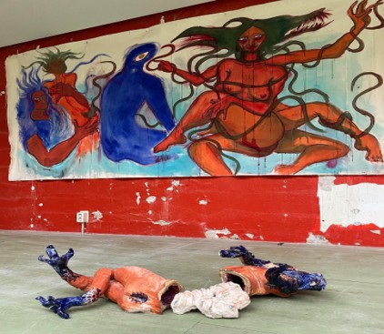
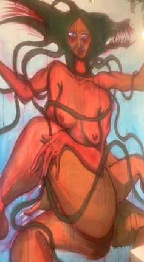
Title, Material: Lillith part 1, part of a bigger installation for my graduation work. acrylic on Canvas Size: 100 x 300 cm
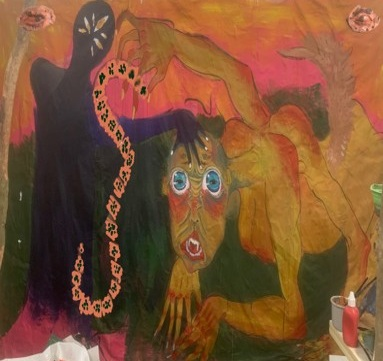
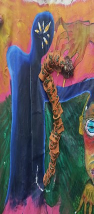
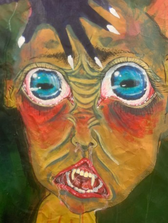
Title, Material: Lillith part 2, part of a bigger installation for my graduation work. Ceramic and acrylic on Canvas Size: 100 x 300 cm
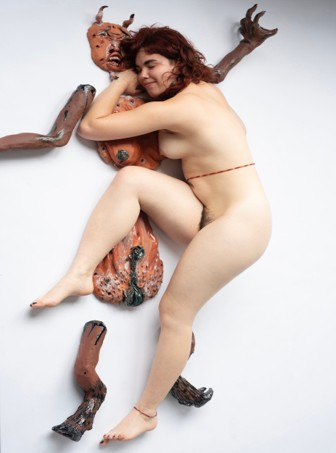
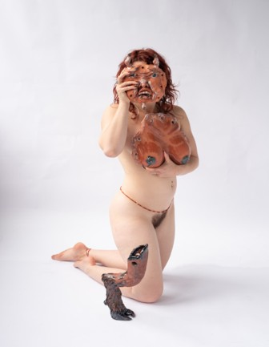
Title, Material: Lilith , graduation Performance, high fired stoneware glazed. Size: -